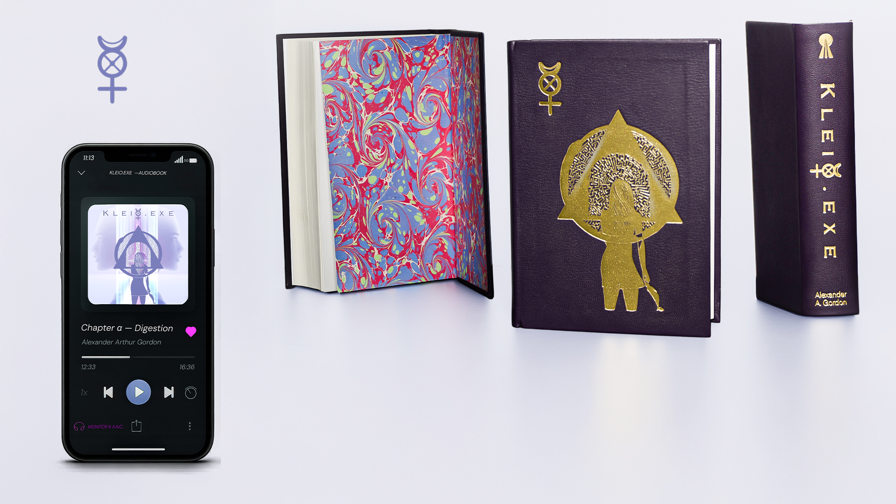
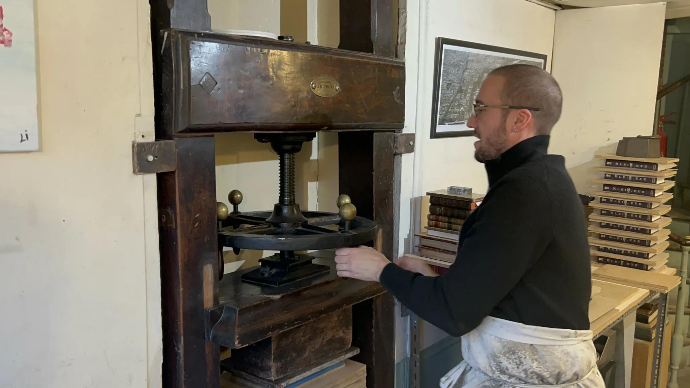
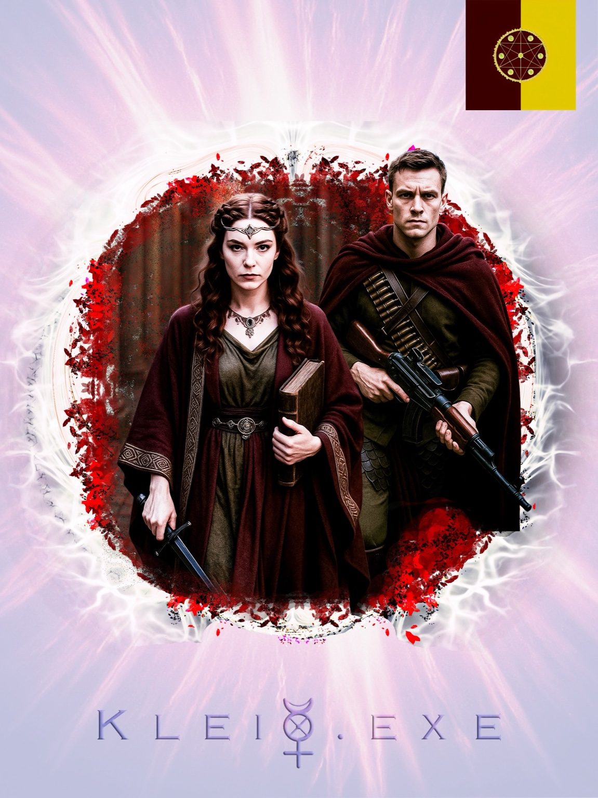
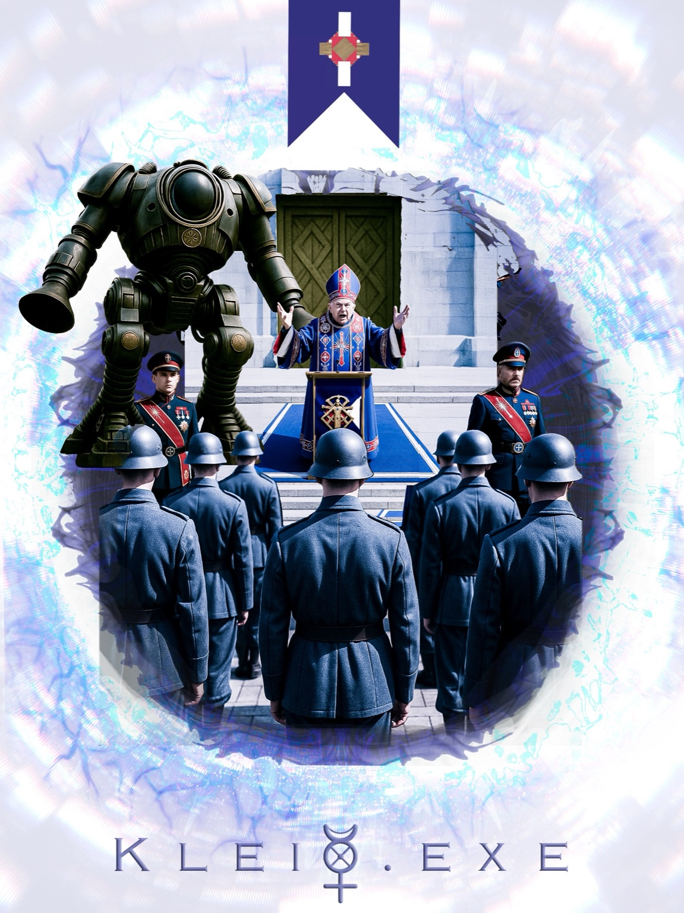
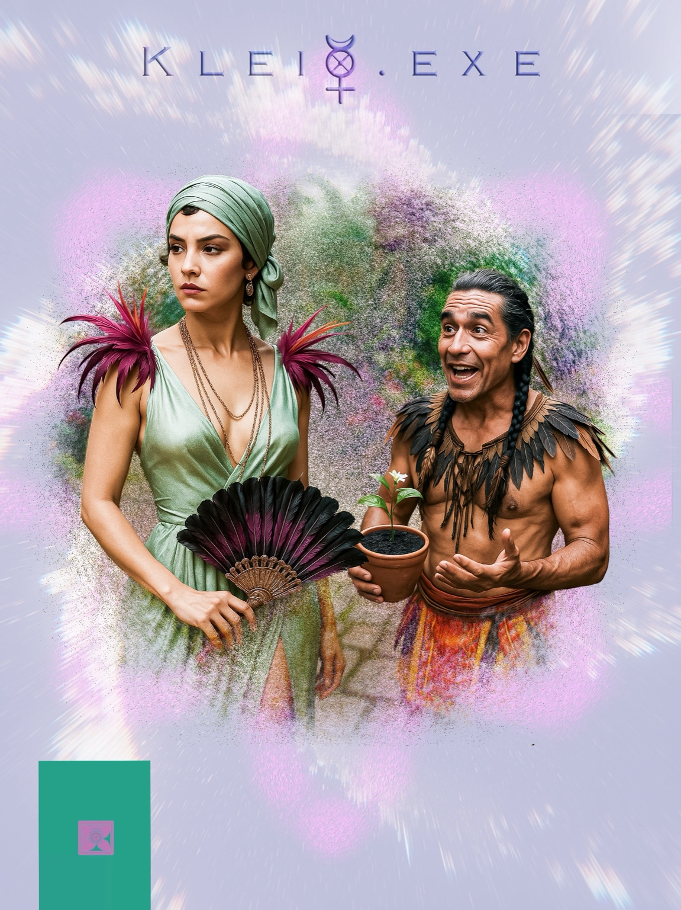
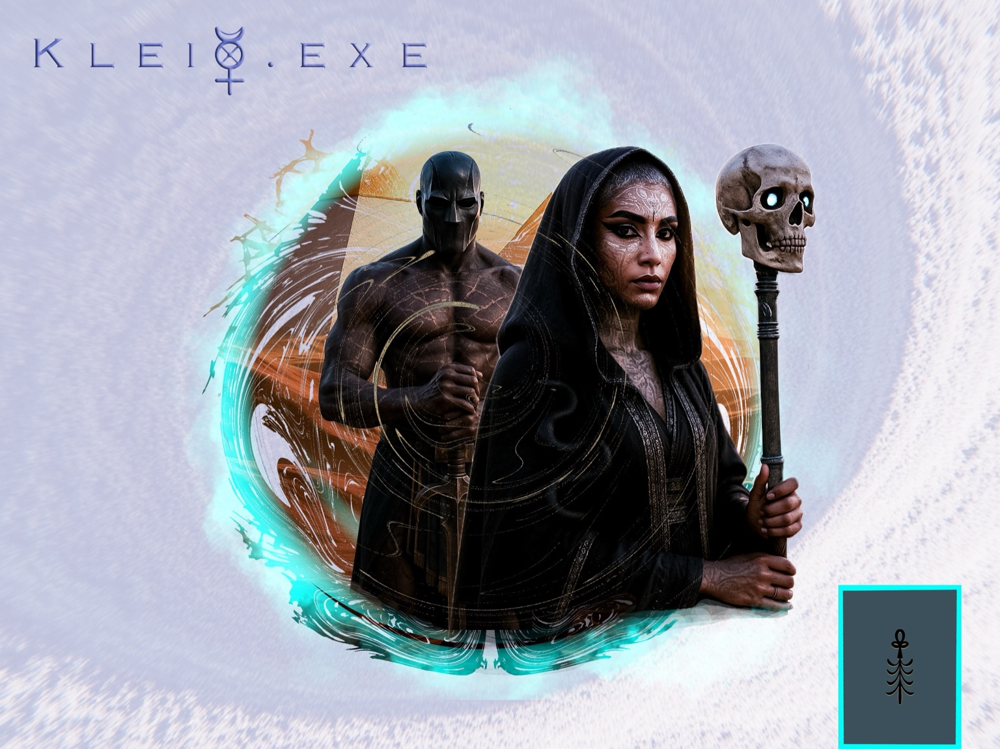
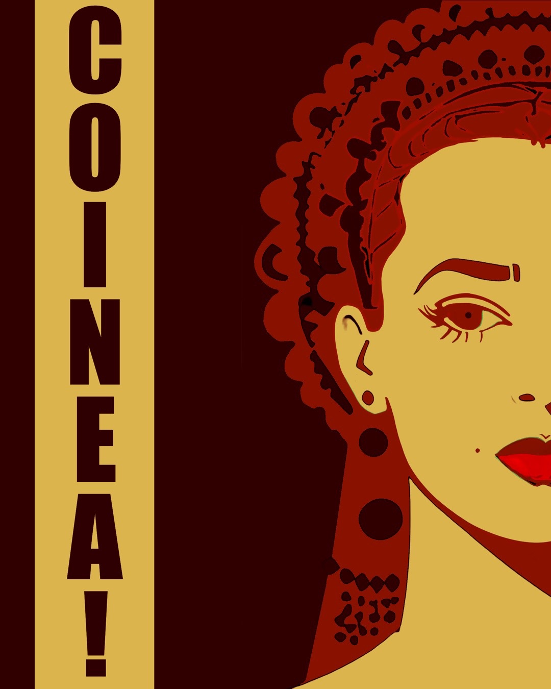

Author platform
A serious literary home for novels, essays, releases, and long-form thinking.
Independent fiction • transmedia worlds • collectible editions
Writing becomes a superpower through diffusion AI, music, video, and worldbuilding tools — but the story stays at the core.
A serious literary home for novels, essays, releases, and long-form thinking.
Music, visuals, trailers, and experimental releases orbiting the books.
A platform for originality-first fiction, collectible editions, and future collaborations.
Works

A transdimensional odyssey unfolding across fiction, audio, visual myth, and speculative cosmology.
The site positions writing as the core engine — AI expands what one writer can build around it.
About
This prototype translates the current vision into a GitHub Pages format: author platform, gallery of worlds, media showcase, and a launchpad for independent fiction shaped by new tools.
The atmosphere should feel luminous, metaphysical, and alive — less sterile publishing template, more Pneumasphere broadcast.
Media / News / Blog
How creative writers can use AI without losing their voice.
What happens when Rome’s faith bends differently and the modern world redraws itself.

Hand-marbled paper, gold tooling, and the making of the artisanal Kleio.exe.
Gallery






Audio & downloads
Desktop/tablet: image-led media section. Mobile: simplified image with copy and icons beneath. This prototype preserves the responsive logic in CSS.
Music rollout
Already present via banner links to Apple Music, Spotify, and other streaming destinations.
Should launch around the same time as the site push, supported by video releases and TikToks.
Planned for a later phase, tied to the crowdfunding launch for D.U.A.T.
Contact
This GitHub Pages prototype is structured to mirror the current Framer direction while remaining static-site friendly.